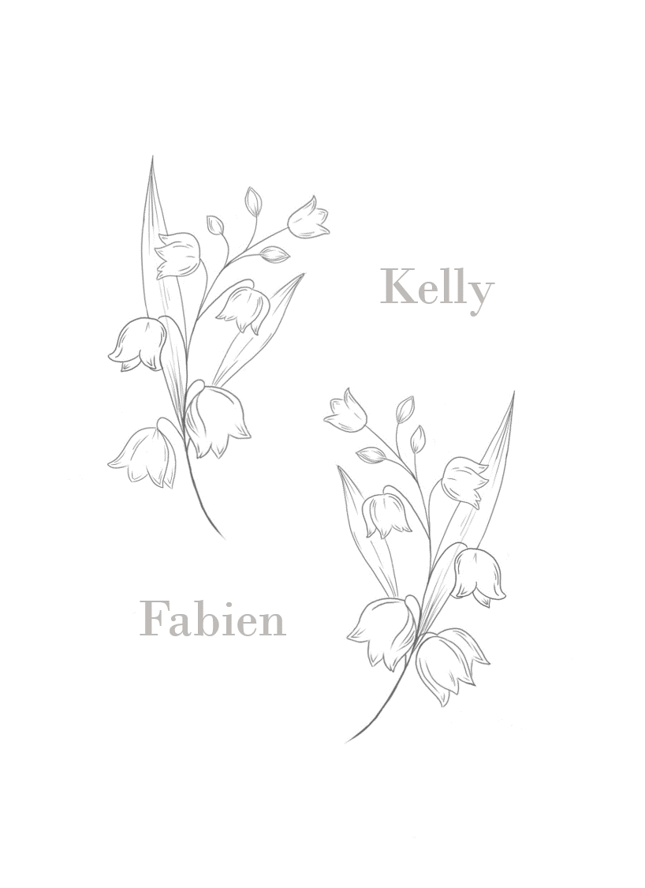

Nous sommes très heureux de vous convier à notre mariage le samedi 15 mai 2021 à partir de 15h.
La cérémonie se déroulera au Château de la Chesnais, à Eaubonne, à 20 min de Paris en voiture.
Merci de nous confirmer votre présence (ainsi que celle de votre conjoint, et enfant?) avant le 31 Décembre 2020.
Kelly et Fabien

Déroulé de la journée
15h : Réception au château
16h : Cérémonie laïque dans les jardins
17h : Vin d'honneur
20h: Diner et soirée

Informations pratiques
Où ?A château de la Chesnais, à 20min de Paris.
https://www.chateaudelachesnaie.fr/
Adresse : 1 Avenue Voltaire, 95600 Eaubonne
Y a-t-il des places pour se garer? Oui juste à l'extérieur du château.
Y a-t-il un service voiture/taxi pour rentrer après la soirée ? Oui il y a tout le temps des Ubers. Coût 40 euros la course pour rentrer à Paris nord.
Est-ce que les enfants sont conviés ? Bien sûr, un service de garderie sera prévu pour les plus petits.
Si je n'habite pas Paris, que me recommandez-vous pour me loger? Le mieux est de trouver un hôtel ou Airbnb dans le centre de Paris pour profiter de la capitale, le château étant situé à seulement 20min du centre de Paris.
Y a-t-il un thème vestimentaire à respecter? Venez comme vous le souhaitez, soyez élégant.
Y a-t-il une cagnotte? Oui! Si vous voulez participer à notre voyage au Japon, vous pouvez contribuer à la cagnotte : https://www.chateaudelachesnaie.fr/